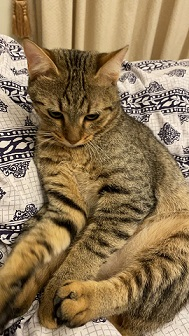
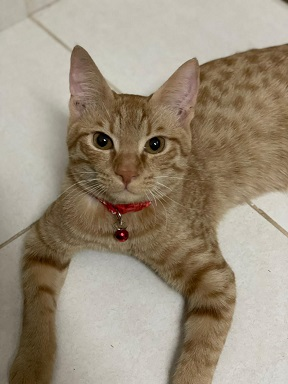
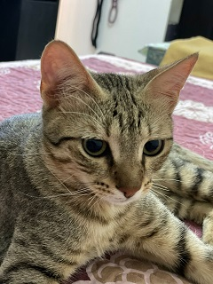

About Me
I am a 2nd year
software engineeering
graduate student who is currently interested in web
development. My interests include tech news, cats, music, drawing, and gaming. I like looking into the
details
of things
and daydreaming.
Here are some of my interests in more detail:
- Music: 90's Techno, Classic Rock, Daft Punk, and Jungle Bass
- Games: Half Life, Minecraft, Doom, 2D Sonic, and Metal Gear Solid
I also raised four kittens over at my family's house. They seem to be born in March 2021. One of them has
since been adopted, but the other three remain at my family's house. Let me introduce them to you.
- Tabby: Yes, that is his name.
Tabby is a vocal
male cat. He used to be one of the more active
kittens, but nowadays just demands cuddles. He does not like it when humans aren't around him for
too long and will insist on cuddling. However, he is also not too friendly to cats he's not familiar
with. He also likes being picked up and held by the shoulder. Be careful though, sometimes he might
pounce on you just for fun!
- Alex: Alex is an orange
tabby cat. He is also
pretty vocal, more than Tabby in fact. He is a bit of a troublemaker sometimes, but his face will
make you forget what he did. He loves cuddles and playtime (especially straws) but don't indulge him
too much, or he will start
suckling on his own fur (this is something that can happen to orphaned kittens). He is much more
friendly towards other cats too, and loves wrestling with them.
- Sad Eyes: Sad Eyes is yet
another tabby cat who looks like Tabby, but is slightly skinnier and obviously has sad looking eyes.
Sad eyes loves sitting on your lap and is the biggest troublemaker out of the three. He likes
hanging out with Alex more than Tabby, and sometimes they can be seen grooming each other. Sad Eyes
prefers cuddling and exploring over playtime.